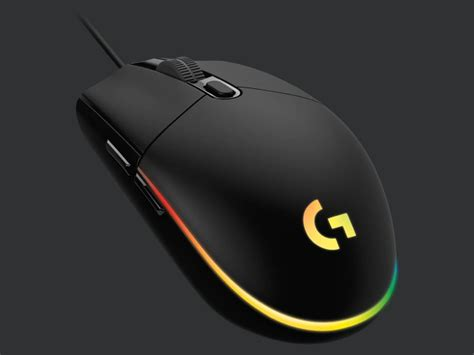

Logitech G102 LIGHTSYNC
Cena: 119,00 zł

Typ myszy:
Dla graczy
Łączność:
Przewodowa
Sensor:
Optyczny
Rozdzielczość:
8000 dpi
Liczba przycisków:
6
Rolka przewijania:
1
Interfejs:
USB
Długość przewodu:
2,1 m
Profil:
Praworęczny
Podświetlenie:
Podświetlana obudowa
Podświetlane logo
Dodatkowe informacje:
Programowalne przyciski
Profile ustawień
1000 Hz Ultrapolling
1 ms czasu reakcji
5 trybów DPI
Wbudowana pamięć
32-bitowy procesor ARM
Kolor:
Czarny
Długość:
116,6 mm
Szerokość:
62 mm
Wysokość:
38,2 mm
Waga:
85 g
Gwarancja:
24 miesiące (gwarancja producenta)